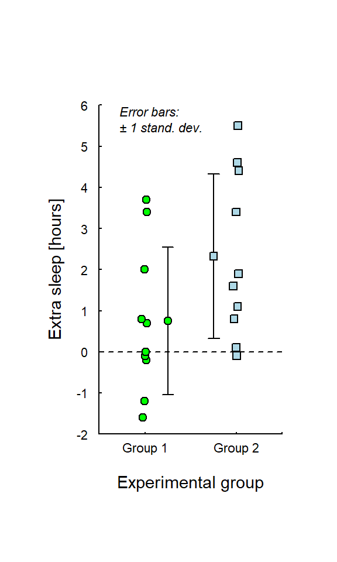
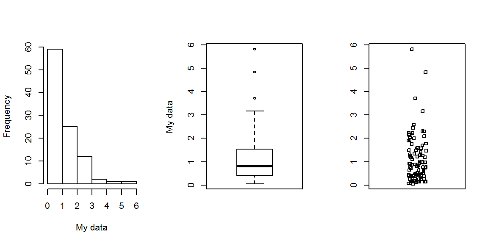
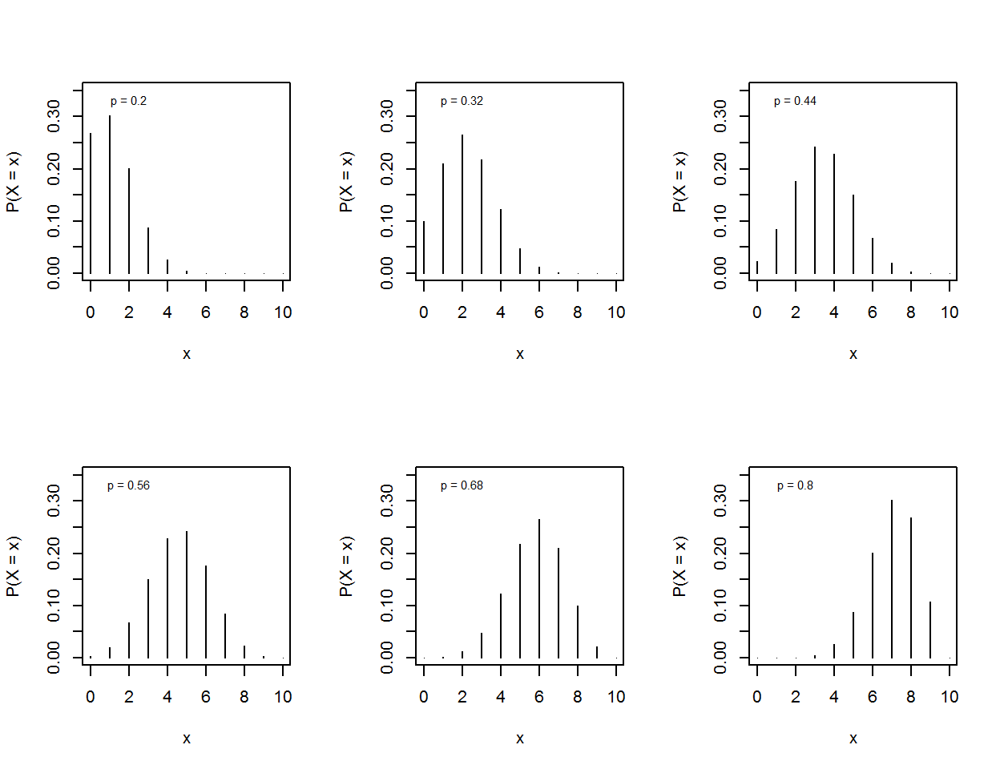
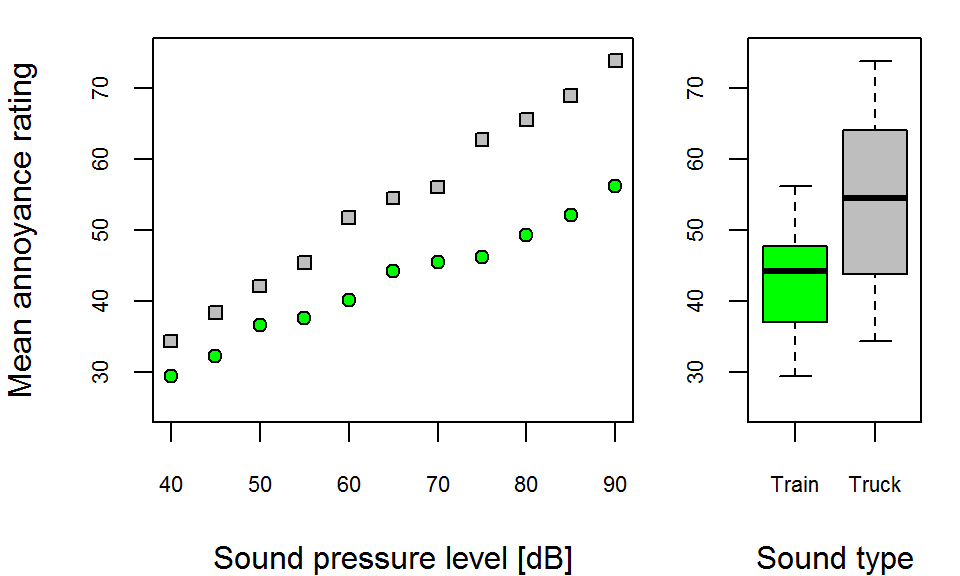
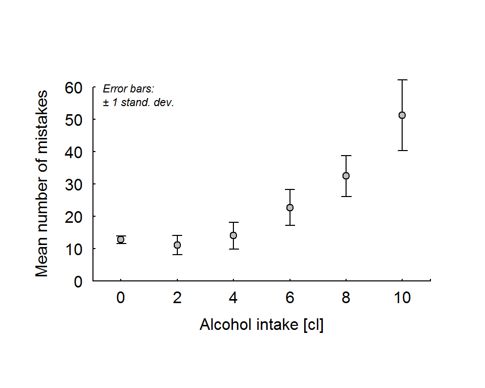
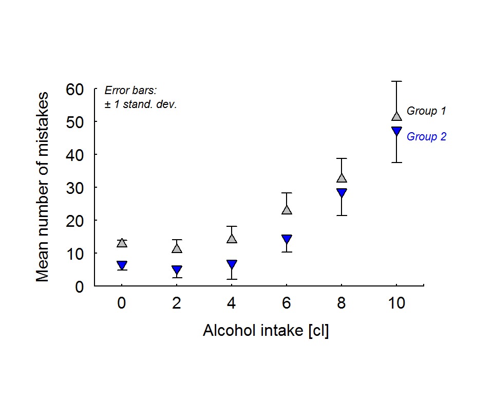
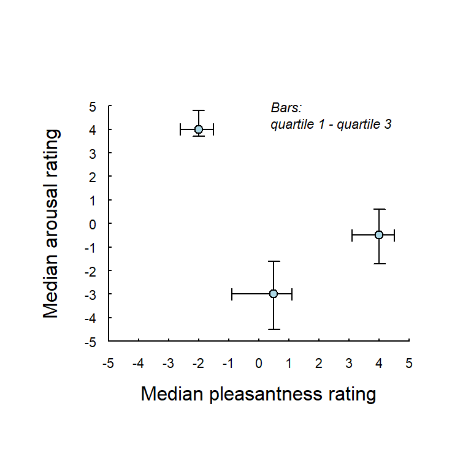
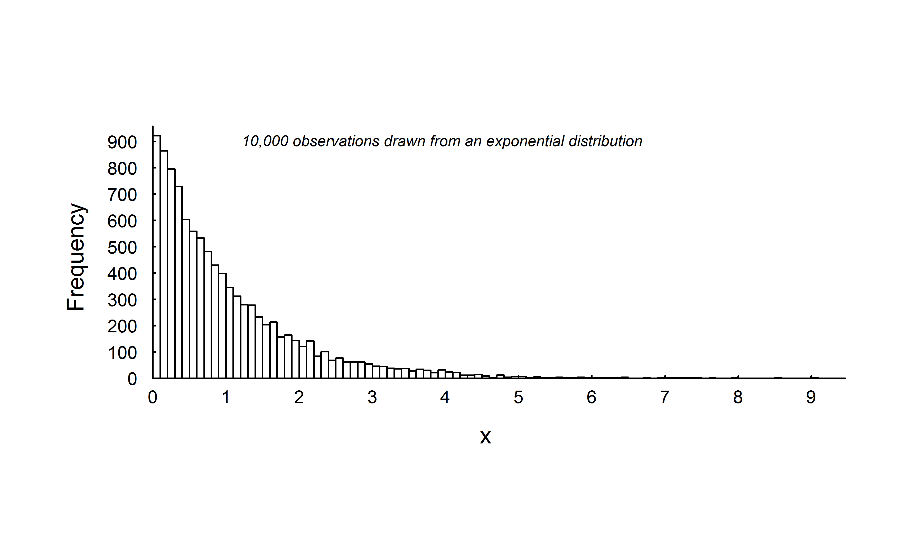

I know of no better software than R for plotting data. R gives you full control of every element of the output; you can build the graph from bottom up, step by step, adding one element at a time.
Note: In the code examples below, I name each function argument also when not necessary, like this:plot(x = exposure, y = outcome), although plot(exposure, outcome) would have worked equally well (if you provide the arguments in the order specified by the functions help-page, names are not necessary). Naming arguments, also when not necessary, is good practice, because it helps the reader to understand the code (the reader could be you in 7 months, when all this might be forgotten).
Below is an example of how to build a plot from bottom up. It uses R’s data set sleep: Two groups tested on two sleeping drugs; the outcome is the amount of extra sleep.
# Load data
g2 <- sleep$extra[sleep$group == 2] # Extra sleep Group 2
g1 <- sleep$extra[sleep$group == 1] # Extra sleep Group 1
# Create an empty plot
plot(x = NULL, xlim = c(0.5, 2.5), ylim = c(-2, 6), axes = FALSE, ann = FALSE)
# Add line for no effect
lines(x = c(0.5, 2.5), y = c(0, 0), lty = 2)
# Add data points for group 1, slighlty displaced (jittered) along x.
jitter <- rnorm(n = length(g1), mean = 0, sd = 0.02)
points(x = 1 + jitter, y = g1, pch = 21, bg = 'green')
# Add error bar +/- 1 standard deviation for group 1 (more on error bars below)
arrows(x0 = 1.25, y0 = mean(g1) - sd(g1),
x1 = 1.25, y1 = mean(g1) + sd(g1),
length = 0.05, angle = 90, code = 3)
# Add mean value for group 1
points(x = 1.25, y = mean(g1), pch = 21, bg = 'green')
# Add data points for group 2
points(x = 2 + jitter, y = g2, pch = 22, bg = 'lightblue')
# Add error bar +/- 1 standard deviation for group 2
arrows(x0 = 1.75, y0 = mean(g2) - sd(g2),
x1 = 1.75, y1 = mean(g2) + sd(g2),
length = 0.05, angle = 90, code = 3)
# Add mean value for group 2
points(x = 1.75, y = mean(g2), pch = 22, bg = 'lightblue')
# Add x-axis
axis(side = 1, at = c(0.5, 1, 2, 2.5), labels = c('', 'Group 1', 'Group 2', ''),
tck = 0.01, pos = -2, cex.axis = 0.7, mgp = c(3, 0, 0))
# Add y-axis
axis(side = 2, at = seq(-2, 6), labels = seq(-2, 6),
tck = 0.01, pos = 0.5, cex.axis = 0.7, mgp = c(3, 0.5, 0), las = 1)
# Add x-axis text
mtext(text = "Experimental group", side = 1, line = 1, cex = 0.9)
# Add y-axis text
mtext(text = "Extra sleep [hours]", side = 2, line = 1.2, cex = 0.9)
# Add info on error bars (new line: \n plus-minus sign: \u00B1)
text(x = 0.6, y = 5.6, labels = "Error bars:\n\u00B1 1 stand. dev.",
cex = 0.7, font = 3, pos = 4)
It’s easy to create subplots with the command par(mfrow=c()). This changes the plotting default from a single plot (par(mfrow=c(1, 1))), to whatever number of plots you like. This example places three plots in one row:
par(mfrow=c(1, 3))
my_data <- rexp(n = 100)
hist(x = my_data, main = '', xlab = 'My data')
boxplot(x = my_data, ylab = 'My data')
stripchart(x = my_data, vertical = TRUE, method = 'jitter')
Here is another example that arranges six plots in two rows and three columns. This code also illustrates how to generate multiple plots using lapply() (very powerful, e.g., if you want to plot data for each participant in an large experiment).
plot_binom <- function(p, n = 10) {
# Function that plots the binomial distribution
plot(x = 0:10, y = dbinom(x = seq(0:n), size = n, prob = p),
type = 'h', ylim = c(0, 0.35),
xlab = 'x', ylab = 'P(X = x)')
text(x = 2, y = 0.33, labels = paste('p =', p), cex = 0.7)
}
# Sets default to put succesive plots in a 2x3 grid
par(mfrow=c(2, 3))
# Arguments for plot_binom()
p <- c(0.2, 0.32, 0.44, 0.56, 0.68, 0.80)
# Applies plot_binom() separately to each element of p
myplots <- lapply(p, plot_binom)
# This restores the default
par(mfrow = c(1, 1))
Modifying the default value of mfrow: par(mfrow = c(1, 1)), does not allow subplots of different sizes (as far as I know). If that is what you want, instead modify the default value of fig: par(fig = c(0, 1, 0, 1). It’s four arguments specify a proportion of the plotting window, for example, par(fig = c(0, 1, 0.5, 1) would locate the subplot so as to cover the upper half of the plotting area (from 0 to 100 % along the horizontal dimension, and from 50 to 100 % along the vertical dimension). Here is an example with two subplots:
# Create some random data
set.seed(123)
sound_level <- seq(from = 40, to = 90, by = 5)
annoyance_train <- 10 + sound_level * 0.5 + rnorm(length(sound_level))
annoyance_truck <- 2 + sound_level * 0.8 + rnorm(length(sound_level))
# Plot a scattergram to the left (to cover 70 % of the plotting area)
par(fig = c(0, 0.7, 0, 1), # Define plotting area
mar = c(4,4,1,1)) # Set margins of subplot (explained below)
plot(x = sound_level, y = annoyance_train, ylim = c(25, 75), pch = 21, bg = 'green',
xlab = 'Sound pressure level [dB]', ylab = 'Mean annoyance rating', cex.axis = 0.7)
points(x = sound_level, y = annoyance_truck, ylim = c(25, 75), pch = 22, bg = 'grey')
# A boxplot to the right, covering the remaing 30 % of the plotting area
par(fig = c(0.7, 1, 0, 1),
mar = c(4, 2, 1, 1), new = TRUE) # new = TRUE adds it to the active plot
boxplot(annoyance_train, annoyance_truck, ylim = c(25, 75), col = c('green', 'grey'),
xlab = 'Sound type', names = c('Train', 'Truck'), cex.axis = 0.7)
The default value of mar (margins): par(mar=c(5.1, 4.1, 4.1, 2.1)) sets the size of the so called inner margins of the plot, i.e., the space outside the axes (unit: lines). You may want to change these settings to fine adjust your subplots; extensive trial and error typically is needed to get it perfect.
Above I used the function arrows() to create one error bar at the time. Here an example how to use it to create multiple error bars in one go.
# Simulate some data
set.seed(123)
alcohol <- rep(x = seq(from = 0, to = 10, by = 2), times = 20)
mistakes <- 10 + 0.4 * alcohol + 0.6 * (alcohol - 2)^2 +
rnorm(n = length(alcohol), mean = 0, sd = 0.8 * (alcohol + 2))
alc_levels <- unique(alcohol)
m_mistakes <- tapply(mistakes, list(alcohol), mean)
sd_mistakes <- tapply(mistakes, list(alcohol), sd)
# Plot scattergram with means +/- 1 sd
plot(x = NULL, xlim = c(-1, 11), ylim = c(0, 60), axes = FALSE, ann = FALSE)
arrows(x0 = alc_levels, y0 = m_mistakes - sd_mistakes,
x1 = alc_levels, y1 = m_mistakes + sd_mistakes,
length = 0.05, angle = 90, code = 3) # See help(arrows) for details
points(x = alc_levels, y = m_mistakes, pch = 21, bg = 'grey')
# Add axes etc.
axis(side = 1, at = c(-1, alc_levels, 11), labels = c('', alc_levels, ''),
pos = 0, tck = 0.01, mgp = c(3, 0.3, 0))
axis(side = 2, las = 1, tck = 0.01, pos = -1, mgp = c(3, 0.5, 0))
mtext(side = 1, text = 'Alcohol intake [cl]', line = 1.3)
mtext(side = 2, text = 'Mean number of mistakes', line = 1.5)
text(x = -1, y = 57, labels = "Error bars:\n\u00B1 1 stand. dev.",
cex = 0.7, font = 3, pos = 4)
Here I add one experimental group to the example above. To avoid cluttered error bars, I only plot them in one direction, upwards for the group with higher mean values, and downward for the group with lower mean values.
set.seed(321)
mistakes_g2 <- 4 + 0.4 * alcohol + 0.6 * (alcohol - 2)^2 +
rnorm(n = length(alcohol), mean = 0, sd = 0.8 * (alcohol + 2))
m_mistakes_g2 <- tapply(mistakes_g2, list(alcohol), mean)
sd_mistakes_g2 <- tapply(mistakes_g2, list(alcohol), sd)
# Plot scattergram with means +/- 1 sd
plot(x = NULL, xlim = c(-1, 11.5), ylim = c(0, 60), axes = FALSE, ann = FALSE)
# Data group 1
arrows(x0 = alc_levels, y0 = m_mistakes,
x1 = alc_levels, y1 = m_mistakes + sd_mistakes,
length = 0.05, angle = 90, code = 2) # See help(arrows) for details
points(x = alc_levels, y = m_mistakes, pch = 24, bg = 'grey')
# Data group 2
arrows(x0 = alc_levels, y0 = m_mistakes_g2 - sd_mistakes_g2,
x1 = alc_levels, y1 = m_mistakes_g2,
length = 0.05, angle = 90, code = 1) # See help(arrows) for details
points(x = alc_levels, y = m_mistakes_g2, pch = 25, bg = 'blue')
# Add axes etc.
axis(side = 1, at = c(-1, alc_levels, 11), labels = c('', alc_levels, ''),
pos = 0, tck = 0.01, mgp = c(3, 0.3, 0))
axis(side = 2, las = 1, tck = 0.01, pos = -1, mgp = c(3, 0.5, 0))
mtext(side = 1, text = 'Alcohol intake [cl]', line = 1.3)
mtext(side = 2, text = 'Mean number of mistakes', line = 1.5)
text(x = -1, y = 57, labels = "Error bars:\n\u00B1 1 stand. dev.",
cex = 0.7, font = 3, pos = 4)
text(x = 10, y = max(m_mistakes) + 2, labels = 'Group 1', col = 'black',
cex = 0.7, font = 3, pos = 4)
text(x = 10, y = max(m_mistakes_g2) - 2, labels = 'Group 2', col = 'blue',
cex = 0.7, font = 3, pos = 4)
It is of course possible to plot double error bars. Here an example with made up data: assessments of three photographs on two scales, Valence (degree of pleasantness) and Arousal (degree of activation).
# Make up some data
valence_mdn <- c(-2.0, 0.5, 4.0)
valence_q1 <- c(-2.6, -0.9, 3.1)
valence_q3 <- c(-1.5, 1.1, 4.5)
arousal_mdn <- c( 4.0, -3.0, -0.5)
arousal_q1 <- c( 3.7, -4.5, -1.7)
arousal_q3 <- c( 4.8, -1.6, 0.6)
# Empty scattergram
plot(x = NULL, xlim = c(-5, 5), ylim = c(-5, 5), axes = FALSE, ann = FALSE)
# Bars along x-axis: quartile 1 --- quartile 3
arrows(x0 = valence_q1, y0 = arousal_mdn,
x1 = valence_q3, y1 = arousal_mdn,
length = 0.05, angle = 90, code = 3) # See help(arrows) for details
# Bars along y-axis: quartile 1 --- quartile 3
arrows(x0 = valence_mdn, y0 = arousal_q1,
x1 = valence_mdn, y1 = arousal_q3,
length = 0.05, angle = 90, code = 3) # See help(arrows) for details
# Add median values
points(x = valence_mdn, y = arousal_mdn, pch = 21, bg = 'lightblue')
# Add axes etc.
axis(side = 1, pos = -5, at = seq(-5, 5), tck = 0.01,
cex.axis = 0.7, mgp = c(3, 0.3, 0))
axis(side = 2, pos = -5, at = seq(-5, 5), tck = 0.01,
cex.axis = 0.7, mgp = c(3, 0.5, 0), las = 1)
mtext(side = 1, text = 'Median pleasantness rating', line = 1.3)
mtext(side = 2, text = 'Median arousal rating', line = 1.5)
text(x = -0, y = 4.5, labels = "Bars:\nquartile 1 - quartile 3",
cex = 0.7, font = 3, pos = 4)
For publication, you need to expprt your plot to a suitable file format. The pdf-format is vector based and thereby possible to scale up and down without loss of information. This format is accepted by most publishers. Unfortunately it is not easily incorporated in a standard word-prcessor file or on a web page. For this you need a pixel based file format, and teh one most seem to be recommending nowdays is the png-format.
Use the function pdf() to export your figure in a specified size to a pdf-file. The code generates no output except the file so you have to open the file to see what you got. I warn you: Your figure will probably look terribly the first time; you need to practice trial-and-error for a while to get it right, primarily by changing sizes of symbols, axis numbers, text elements, etc.
# pdf() takes inches as input, dived by 25.4 to get mm
inch <- 25.4
# The figure generated below this line will be exported in pdf-format, with
# size 160 mm x 90 mm
pdf("fig01.pdf", width = 150/inch, height = 90/inch)
# Just a histogram
set.seed(123)
hist(x = rexp(1e4), breaks = 100, main = '', axes = FALSE, ann = FALSE)
axis(side = 1, at = seq(0, 10, 1), tck = 0.01, pos = 0,
cex.axis = 0.7, mgp = c(3, 0, 0))
axis(side = 2, at = seq(0, 1e3, 100), tck = 0.01, pos = 0,
cex.axis = 0.7, mgp = c(3, 0.5, 0), las = 1)
mtext(text = "x", side = 1, line = 1, cex = 0.9)
mtext(text = "Frequency", side = 2, line = 1.2, cex = 0.9)
info <- '10,000 observations drawn from an exponential distribution'
text(x = 1, y = 900, info, cex = 0.6, font = 3, pos = 4)
dev.off() # You have to close the 'device' before you can open your pdfFor a .png file, replace the above line pdf(...) with
png("fig01.png", width = 150, height = 90, unit = 'mm', res = 600), for a png file with a resolution of 600 pixels per inch.
Here is what it looks like after I saved it as .png, and then red it into this webside: 
Click here for the script file (Script2) as we left after last time.
(Data sets: threshold data, and background data. See codebooks.txt for details on the variables).
Today we will create a nice plots for publication. (More plots would of course be needed for a full report of this data, but time only allows one figure as illustration in this seminar series.)
Click here for the final script.
© Mats E. Nilsson
Gösta Ekman Laboratory,
Department of Psychology, Stockholm University